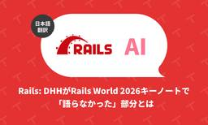
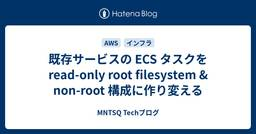
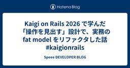
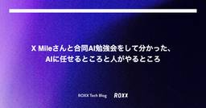
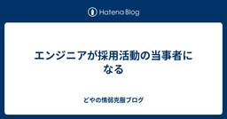
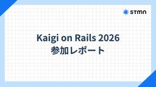
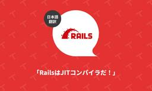

直近1週間の人気フィード
はてなブックマーク数を元に新着優先で並べ替え

Software Factoryの先へ：全社の仕事をAI-NativeにするUbieの内製クラウドエージェント基盤 168
168 Ubie テックブログのフィード
Ubie テックブログのフィード
Ubie CTO の @yukukotani です。Ubie では 2023 年、GPT-3.5 Turbo が出た頃から、Web UI や Slack を起点に動くクラウドエージェント基盤を内製してきました（当時の様子）。2025 年には、Software Factory を目指して、クラウド型エンジニアリングエージェント Uvin の開発も始めました（当時の様子）。一貫してクラウドエージェント
3日前

AIエージェントが決定を勝手に変えてしまった5つのパターンと工夫 90
DRESS CODE TECH BLOGのフィード
こんにちは。Dress Code の HR Force チームで給与ドメインを担当している、いっしーです。僕はほぼ一日中、Claude Code や Codex に何かしら任せています。仕事では、決定とその理由を ADR に、実装する動作を OpenSpec の仕様書に残し、エージェントにはそれらを読ませてから作業させています。ところが、決めたはずのことが、いつのまにか変わっていることがあります。
3日前

AIでテストを量産したら、レビューが重くなった——レガシーコードの安全網づくり 88 RAKUS Developers Blog | ラクス エンジニアブログ
RAKUS Developers Blog | ラクス エンジニアブログ
はじめに 伝票画面の表示処理が抱える問題 人間とAIによる大量テストの作成 並行して作ったら、レビューが重くなった 分担して進めたら、設計に差が生まれた 統一のために整えた2つのこと 1. 設計・実装の方針を揃える 2. 基準をレビュースキルにして、セルフチェックを統一する まとめ：AIに書かせるなら、方針と基準を先に決める
2日前

GitHub Actions を狙った広域サプライチェーン攻撃（11/10~11/12）に関する注意喚起 52 GMO Flatt Security Blog
GMO Flatt Security Blog
2026年11月10日から12日にかけて、GitHub 上の多数のリポジトリに対して悪性コミットにより GitHub Actions のワークフローに悪性コードが注入される事例が発生しています。 挿入されたコードは、ワークフローや npm フックが実行されると、CI環境内のシークレットを収集し、C2サーバーへのHTTP通信または Telegram Bot API への送信を試みる infostea
2日前

aws-emulatorにTerraformでリソースを作成できるか試してみる 44 フューチャー技術ブログ
AWSから発表された aws-emulator に向けて、Terraform でVPCやLambdaを作成できるか、GitHub Actions のCIに組み込めるかを試しました。
2日前

Rails: DHHがRails World 2026キーノートで「語らなかった」部分とは（翻訳） 32 TechRacho
概要 元サイトの許諾を得て翻訳・公開いたします。 英語記事: Look at all the things he's not doing - Andy Croll 原文公開日: 2026年10月02日 原著者: Andy Croll 日本語タイトルは内容に即したものにしました。 わかりやすさのため、リンクの一部を差し替えています。 Rails: DHHがRails World 2026キーノートで
2日前

お客様の前に立つフロント人材になるために、技術以外の最小構成 144 フューチャー技術ブログ
お客様の前に立ってプロジェクトを自律的に進めるために、技術のほかに何が必要か、会議でのやり取りとプロジェクト全体視点でのやり取りの2つの層に分けて整理しました。
4日前

2026年度 新卒研修『AWS インフラハンズオン』の資料を公開します 135 CyberAgent Developers Blog | サイバーエージェント デベロッパーズブログ
こんにちは、株式会社WinTicket でバックエンドとインフラを担当している茨木啓瑚（@oyasu ...
4日前

Devinはソフトウェアファクトリーのフレームワークになった 140 Timee Product Team Blog
こんにちは、タイミーで開発生産性改善チームのマネージャーをしている新谷です。 みなさん Devin を使っていますか？タイミーでは日々 Devin が仕事をしてくれています。 Devinは単にタスクを依頼するツールにとどまらず、ソフトウェアファクトリーのフレームワークになりました。最近の進化が著しいので紹介させてください。本当にすごい。 ソフトウェアファクトリーとは LayerX CTOの松本さん
6日前

Kotlin コンテキストパラメータの詳細な挙動を調べてみた 18 ドワンゴ教育サービス開発者ブログ
Kotlin の新機能、コンテキストパラメータの細かい仕様について、実際にコードを書いて挙動を調べてみました
3日前

MCP を組み込んだアプリを手元で複数動かすための構成パターン 63 Nature Engineering Blog
モバイルエンジニアの亀田です。 Emacs が 50 周年ですね。 MCP が発表されてから自分で使うツールには MCP を組み込んできました。当然 Emacs にも組み込んでいますし、弊社の Nature Home アプリでも、開発中は MCP でいろいろな操作ができるようにしています。 次の GIF は、Claude Code から、iPhone で動かしている開発中の Nature Home
4日前

既存サービスの ECS タスクを read-only root filesystem & non-root 構成に作り変える 52 MNTSQ Techブログ
MNTSQ Techブログ
はじめに なぜやるのか read-only 化と non-root 化の嬉しさ 進め方 read-only 化 /tmp 配下は例外的に書き込めるようにする ECS Exec のエージェントにも書き込み先を与える 空のボリュームはイメージの中身を隠す uv run で起動するサービスには UV_NO_SYNC=1 を渡す 依存の更新で書き込みが増える 検証は rollout とログの件数だけでは足
5日前
ドメインとブランドを持たない。複数プロダクト向けデザインシステムの設計判断 39 RAKUS Developers Blog | ラクス エンジニアブログ
はじめに プロダクト開発支援課フロントエンド推進チームの安彦です。 プロダクト開発支援課は2026年10月に発足したばかりの組織です。私たちのチームが顧客としているのは、プロダクトの先にいるエンドユーザーだけではありません。社内でプロダクトを作っている開発者もまた、私たちが価値を届けるべき顧客として捉えています。 現在、社内の複数のプロダクトで共通して使えるデザインシステム「Libero（リベロ）
4日前

Kaigi on Rails 2026 で学んだ「操作を見出す」設計で、実務の fat model をリファクタした話 #kaigionrails 23 Speee DEVELOPER BLOG
はじめに こんにちは、Speee で不動産一括査定サービス「イエウール」の開発をしている福井です。新卒で入社して半年、Rails を触りはじめて1年足らずの私が、Kaigi on Rails 2026 の発表で学んだ設計の考え方で、実務の fat model をリファクタした話を紹介します！ TL;DR モデルにある on: や if: の条件を業務ルールとして読み直すと、名前の付いていない操作を
5日前
QA チームで Jev 勉強会を開いたら、AI に任せる範囲と人に残したい範囲が見えてきた 3 LayerX エンジニアブログ
QA エンジニア16人で Jev の勉強会を開き、78枚の付箋から「Jev に任せる場所」と「人に残す場所」を整理しました。判断特化型 AI を QA に活かすための、2つの問いを紹介します。
2日前

X Mileさんと合同AI勉強会をして分かった、AIに任せるところと人がやるところ 20 ROXX開発者ブログ
ROXX開発者ブログ
こんにちは、ROXXでEM（エンジニアリングマネージャー）を務めている窪内です。 10月14日、同じビルに入っているX Mileさんと、合同でAI勉強会を開きました！ 両社あわせて30名弱が集まり、LT6本とブレイクアウト5部屋を2時間に詰め込んだ、にぎやかな会になりました。 同じビルで、同じ人材紹介の領域にいる2社ですが、お互いの開発の中身をじっくり見せ合うのは今回が初めて。使っている道具はけっ
6日前
なぜ mixi2 は iPhone Duo の発売初日から最適化できたのか？ 19 MIXI DEVELOPERS Tech Blogのフィード
こんにちは！mixi2 エンジニアの久野です🍎iPhone Duo（以下 Duo）の発売初日、mixi2 がすでに最適化されている！ と話題にしていただきました。対応を早く進められた理由は、振り返るとこの 3 つです。ボトムタブが独自実装だったため、縦配置に変更しやすかったこと分割した画面の右側に表示したい推し機能が決まっていたことシミュレーターでの確認だけで、実機でも動くことを祈ってリリースする
5日前

Snowflake Dashboards 2.0が最高な理由と、これからBIに求められること 5 Snowflake Data Heroesのフィード
この記事についてSnowflakeから新しいDashboards（ドキュメント上は Dashboards 2.0 とも呼ばれています）が出ました。触ってみて、正直かなり感動しています。何年も前から「Snowflakeの中でパッと数字を見て、それに質問したいだけなのに、ちょうどいいものがない」と不満を持っていたのですが、ようやくその答えが来たと感じたからです。この記事では、なぜこれが私にとって最高だ
4日前

画像認識：Haar CascadesからVision Transformerまで 4 NTT docomo Business Engineers' Blog
NTT docomo Business Engineers' Blog
こんにちは。docomo business SIGN® VPaaS開発チームのJJ、笠置、鈴木です。 普段は映像AIプラットフォームサービスであるdocomo business SIGN® VPaaSの開発をしています。 最近、クマの出没に関するニュースを目にする機会が増えています。人身被害も出ており、対策が急がれています。こうした中、NTTドコモでは、北海道の携帯電話の基地局に設置したカメラの映
3日前
『Unity パフォーマンスチューニング バイブル』の続編『Unity パフォーマンスチューニング ティップス 2026』を無料公開しました 3 CyberAgent Developers Blog | サイバーエージェント デベロッパーズブログ
弊社ゲーム・エンターテイメント事業部（SGE）のエンジニアが執筆した書籍『Unity ...
4日前

Vue Fes Japan 2026 参加レポート 3 ANDPAD Tech Blog
ANDPAD Tech Blog
こんにちは！ANDPAD施工管理の開発チームでSWEをしている井野です。最近3Dプリンターを購入しまして、日々作れそうなものを家の中でめざとく探し回っています。 2026 年 10 月 24 日、大手町プレイス ホール & カンファレンスで開催された Vue Fes Japan 2026 に参加しました。 今年Vueを触り始めたばかりの私にとって、今回が初めての Vue Fes Japan 参加で
4日前

中高生Rubyプログラミングコンテストに協賛します 3 ESM アジャイル事業部 開発者ブログ
ESM アジャイル事業部 開発者ブログ
@junk0612 です。これからの社会を担う世代を対象にした Ruby のプログラミングコンテスト、『中高生Rubyプログラミングコンテスト2026』に、今年も協賛します。 2026.ruby-procon.net 毎年さまざまなアイディア・工夫を凝らした作品が提出され、創ったみなさんによる熱のこもったプレゼンが行われるので、どちらもすでに楽しみです。 最終審査会に今年もお邪魔する予定です。どう
5日前

エンジニアが採用活動の当事者になる 3 HERP TechHub
HERP TechHub
この記事は何？こんにちは、株式会社HERPでエンジニアマネージャーをしているどやです。引き続きプロダクト領域の統括エンジニアやエンジニアの採用責任者をやっています。以前、採用活動というのは組織設
5日前

Kaigi on Rails 2026 参加レポート 3 stmn tech blog
はじめに 初めまして！株式会社スタメンでバックエンドエンジニアをしております、Kと申します。 今回、Kaigi on Rails 2026に参加させていただきましたので、レポートいたします。 個人的には初めてのカンファレンス参加となり、不安がありながらも会場に向かいました。 今年の会場はベルサール渋谷ガーデンでした。 集合写真 会場の様子 ブースエリアは大盛況で、通るのも大変なほど。 15時のCo
5日前
eMudhra中間CA問題対処した？ あなたのマシンでの確認方法と暫定対策手順 4 ANDPAD Tech Blog
こんにちは、テックリードの tomtwinkleです。 我が家に娘が無事誕生して早2ヶ月。あやしながら趣味でセキュリティ事案をウォッチしておりますが、CVEの加速度的な増加具合に戦々恐々としています。 先日 eMudhra 対応で Go 1.27.3 を出したばっかりですが、早速なんだか大量のCVEにモリモリ対応して Go 1.27.4 の準備をしているっぽいGoチームには頭が下がります。 git
6日前

AIと一緒に資格勉強をして、1か月でGitHub資格5つに合格した方法 3 APC 技術ブログ
APC 技術ブログ
こんにちは。ACS事業部の井田です。 私は資格勉強に苦手意識がありましたが、AIを活用して学習ノートや練習問題を作り、この10月にGitHubの資格を5つ取得できました。 AIを活用した勉強方法はすでに多くの記事で紹介されていますが、今回、自分で取り組む中で気づきや工夫した点がありましたので、それらも含めて紹介します。 資格勉強に苦手意識のある方や、AIを活用した勉強方法に興味がある方の参考になれ
5日前

「RailsはJITコンパイラだ！」（翻訳） 3 TechRacho
概要 CC BY-NC-SA 4.0 International Deedに基づいて翻訳・公開いたします。 英語記事: Rails is a JIT compiler | Rails at Scale 原文公開日: 2026年10月21日 原著者: Max Bernstein CC BY-NC-SA 4.0 Deed | 表示 - 非営利 - 継承 4.0 国際 | Creative Common
5日前

Lambda MicroVMs で開発用の一時 Backend 環境を作ってみた 3 DRESS CODE TECH BLOGのフィード
はじめにDress Code 株式会社のかわうそです。Claude や Codex などの AI で開発を進める中で、ローカル PC 環境ではなく、自由にデプロイして動作確認できる環境がほしいと感じていました。MicroVM のような環境があれば、Sandbox のように一時的にテストしたい環境も構築できるため、さまざまな可能性があると考えています。そこで、Lambda MicroVMs を使い、
6日前

フルディスク暗号化におけるTPM 2.0の役割 3 ラック・セキュリティごった煮ブログ
ラック・セキュリティごった煮ブログ
デジタルペンテスト部のν（ニュー）です。 Windows 11の導入要件にもなっている「TPM 2.0」ですが、TPM 2.0が何なのか深く追おうとする人はそう多くはないと思います。今回はそんなTPM 2.0について、特にフルディスク暗号化においてどんな使われ方をしているかを紹介します。 本記事は、定期的に開催されている部内勉強会において発表した内容をベースに、加筆修正を行ったものとなります。 ま
6日前